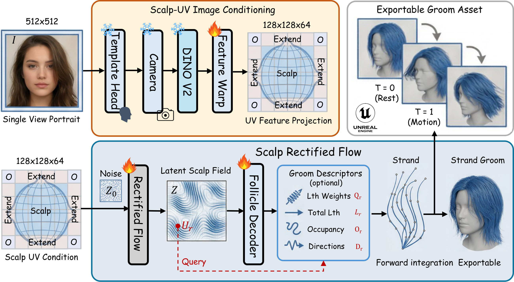
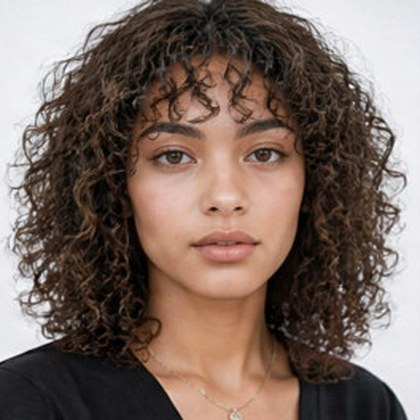
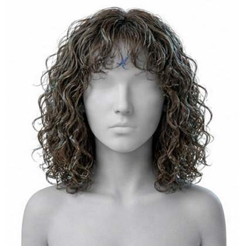
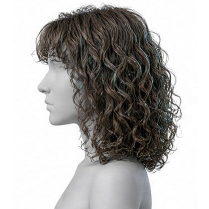
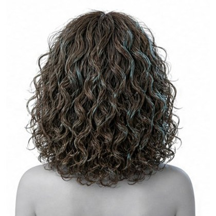
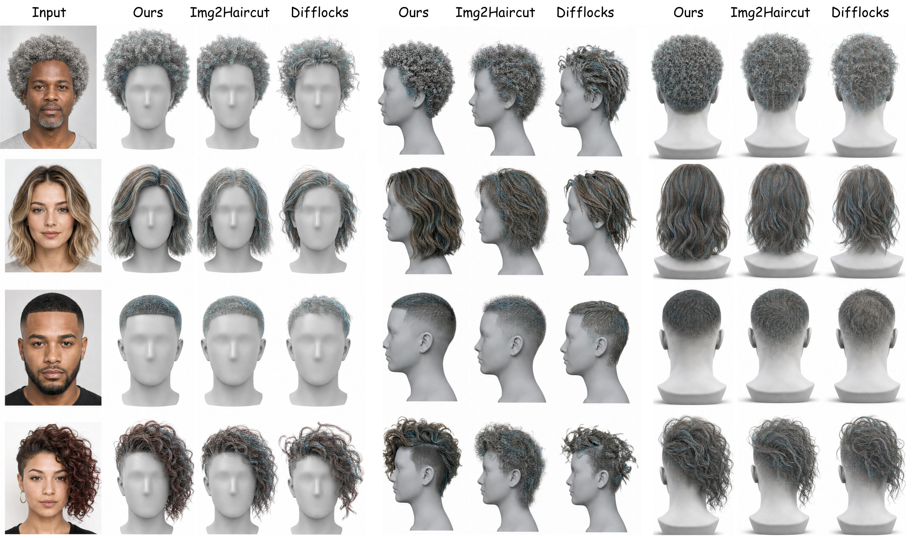
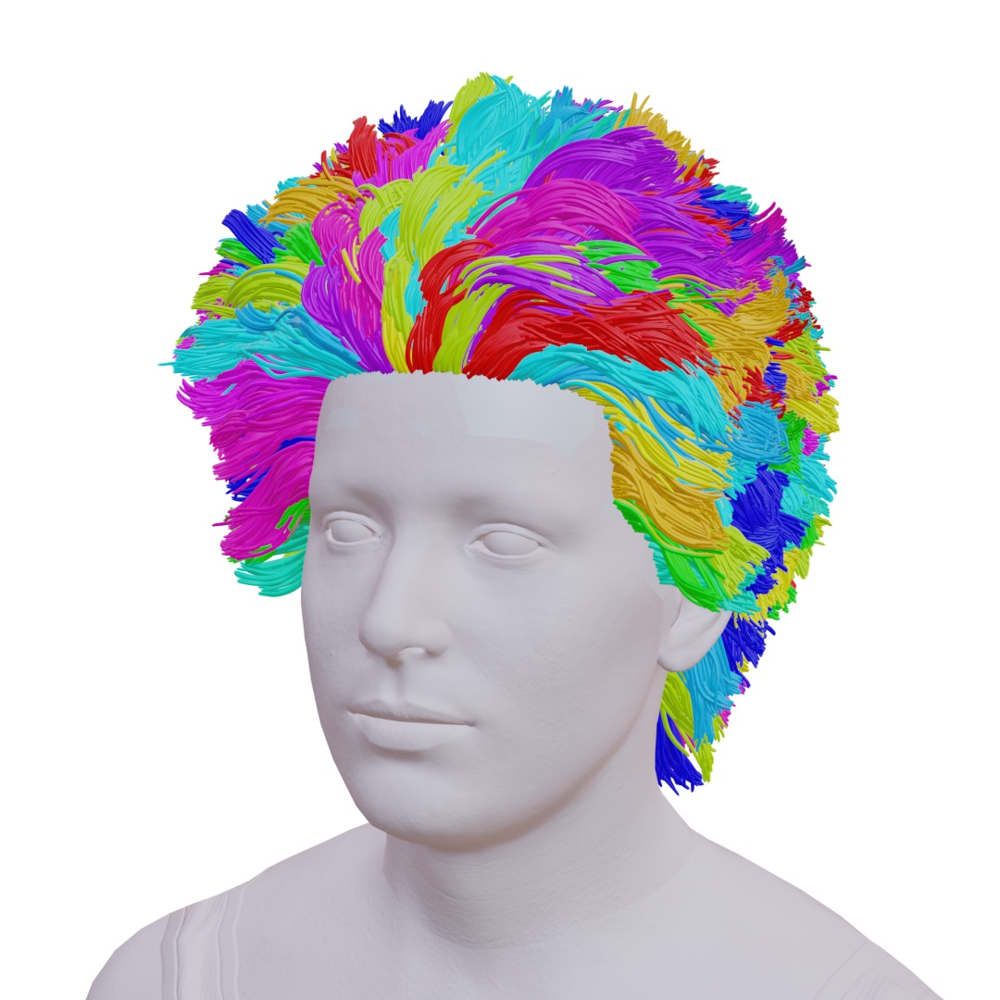
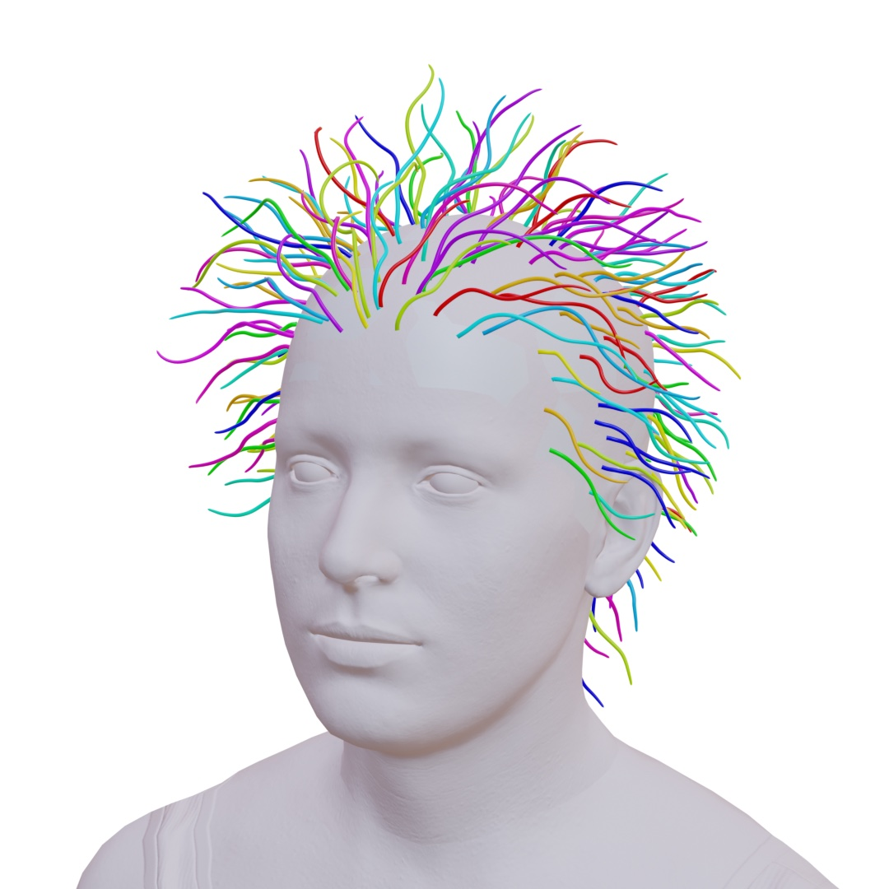
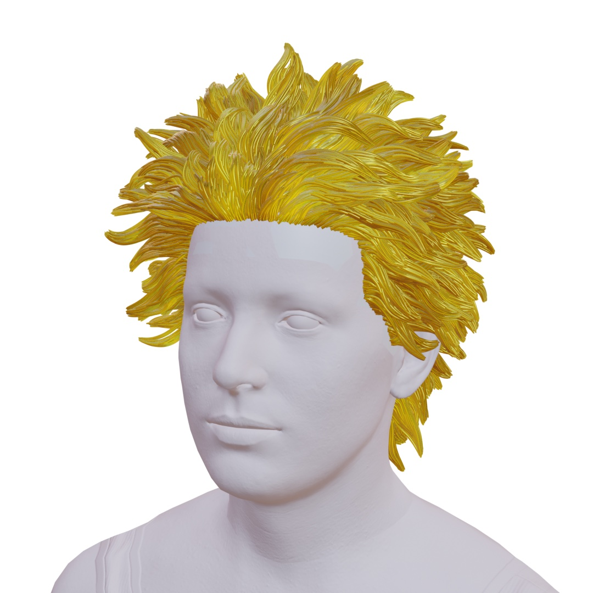

Contributions
-
32,768 strands
Grown from fixed follicles on a shared scalp, from one portrait.
-
Persistent identity
Every strand can be edited, simulated and exported in one forward pass.
-
Scalp-rooted
The structure grooming and simulation need. Meshes and Gaussians lose it.
-
Mesh-based
No explicit strands, so nothing can be groomed or simulated per strand, and there is no follicle correspondence.
-
Gaussian-based
Strands pass through the head, follicles are unstable and do not persist, and the result is hard to serialise as a groom.
-
SAFE-Hair (ours)
Explicit strands rooted on the scalp, a persistent follicle ID for every one by construction, and collision-aware grooms ready to export.
Methodology
Instead of predicting unordered strands in image or world space, SAFE-Hair reasons entirely in a canonical scalp-UV domain shared by all subjects, then decodes one candidate strand per persistent follicle.

-
Scalp-UV conditioning
Fit a template head, extract DINOv2 features and warp them onto the scalp through the recovered camera. A fixed follicle set gives every strand a persistent identity.
\[ \mathcal{R}=\{\mathbf{u}_r\}_{r=1}^{R},\qquad \mathbf{x}_{r,1}=\psi(\mathbf{u}_r) \] -
Rectified flow on scalp fields
A conditional vector field transports Gaussian noise to a latent scalp field \(Z\in\mathbb{R}^{128\times128\times64}\), completing invisible regions with learned priors.
\[ \mathcal{L}_{\mathrm{rf}}=\mathbb{E}\big\|v_\theta(z_t,t,C)-(z_1-z_0)\big\|_2^2 \] -
Persistent follicle decoding
A shared decoder predicts occupancy, segment directions, length allocation and total length; strands grow from the root by forward integration.
\[ \mathbf{x}_{r,t+1}=\mathbf{x}_{r,t}+L_r\,q_{r,t}\,\hat{\mathbf{d}}_{r,t} \] -
Validity priors and export
Attachment, collision and bending priors reduce root flipping, head interpenetration and kinks. Strands are grouped into guide families and serialised to Alembic or engine-native grooms.
\[ g(r)=\arg\min_m\ \alpha\|\mathbf{u}_r-\mathbf{u}_m\|^2+\beta\|\mathbf{f}_r-\mathbf{f}_m\|^2 \]
Interactive: grow strands from fixed roots
Each curve is integrated from a fixed root on the scalp using per-segment directions \(\hat{\mathbf{d}}_{r,t}\) and length weights \(q_{r,t}\). Switch the priors off to see why they matter.
Penetrating samples: 0%
Qualitative Results
The portrait shows only the front. SAFE-Hair completes the side and back on the scalp, and curls continue around the head instead of stopping at the silhouette.
-

Input one front-facing portrait
-

Front reconstructed groom
-

Side never seen in the input
-

Back completed by learned priors
Comparison with Img2Haircut and DiffLocks
Against Img2Haircut and DiffLocks, SAFE-Hair produces scalp-attached strand geometry with more consistent back-view completion and fewer head-interpenetration artifacts.

Quantitative Results
On HairBench-3D, SAFE-Hair leads every geometry metric and every asset metric against five baselines. It reaches an F-score of 81.7 (from 77.9), 69.8 on invisible regions (from 66.1) and a penetration ratio of 3.9% (from 4.8%), compared with the strongest prior baseline.
-
99.8%
of roots land on a valid scalp region, against 93.2% for the strongest prior method.
-
3.28 mm
Chamfer distance, down from 3.74 mm.
-
4.2 s
per portrait for 32,768 strands, with no test-time optimisation.
Main results
| Method | Chamfer | F-score ↑ | F-score (Invis.) ↑ | IoU ↑ | Pen. ratio ↓ |
|---|---|---|---|---|---|
| Perm | 5.82 | 61.4 | 42.7 | 0.781 | 8.6 |
| Neural | 4.36 | 71.8 | 56.2 | 0.824 | 6.1 |
| Hairstep | 4.48 | 70.6 | 59.4 | 0.872 | 7.2 |
| DiffLocks | 3.91 | 76.5 | 63.8 | 0.847 | 5.4 |
| Im2Haircut | 3.74 | 77.9 | 66.1 | 0.861 | 4.8 |
| SAFE-Hair (ours) | 3.28 | 81.7 | 69.8 | 0.884 | 3.9 |
Asset usability
| Method | Root | Valid | Follicle | Export |
|---|---|---|---|---|
| Perm | – | – | – | – |
| Neural | 3.8 | 82.1 | – | 71.3 |
| Hairstep | 2.9 | 87.4 | – | 76.8 |
| DiffLocks | 2.4 | 89.6 | 0.61† | 82.5 |
| Im2Haircut | 1.7 | 93.2 | 0.68† | 88.1 |
| SAFE-Hair (ours) | 0.2 | 99.8 | 0.91 | 99.6 |
Bold: best; underlined: second best. RootDist: mean root-to-scalp distance (mm). ValidRoot: % of roots on a valid scalp region. FollicleStab.: active-follicle consistency under crop, colour and mask perturbations. ExportSucc.: % of predictions serialisable as valid grooms. †Approximated by nearest-root matching.
Exportable Groom
Every strand is decoded from a canonical follicle, so its identity is simply the follicle index \(r\). Follicles are grouped into guide families and the result serialises straight into Alembic or engine-native strand assets.
-

(a) Guide-family clusters
-

(b) Guide strands
-

(c) Refined groom
- Dense follicles. 32,768 canonical follicles with 32 control points per strand.
- Guide selection. Guides chosen by farthest-point sampling in scalp-UV space.
- Child assignment. Children assigned in joint scalp-position and strand-feature space.
- Lossless metadata. Grouping never alters the reconstructed geometry.
strand {
follicle_id: 18342
scalp_uv: (0.412, 0.637)
points: float3[32]
guide_id: 207
}BibTeX
@inproceedings{wang2026safehair,
title = {SAFE-Hair: Scalp-Anchored Fields for Exportable
Single-View Hair Reconstruction},
author = {Wang, Yucheng and Wang, Zedong and Wu, Yuetong
and Ma, Yue and Xu, Dan},
booktitle = {Advances in Neural Information Processing Systems (NeurIPS)},
year = {2026}
}